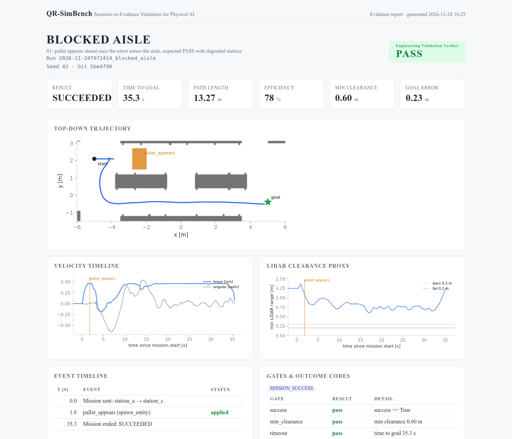

Clear route
PASSThe robot drives across the warehouse on a clear route.
time to goal 28.3 s · min clearance 0.73 m · MISSION_SUCCESS
Describe a robot test once in YAML. QR-SimBench runs it in Gazebo with Nav2, injects the condition you want to test, records everything to MCAP, computes metrics, gives a PASS / WARN / FAIL engineering verdict and writes an evidence report you can compare and reproduce. Open source, Apache-2.0.
View on GitHubQuick startWatch a run QR-Sim (hosted product)Interactive 3D replay of real runs recorded with the open-source code. Drag to look around; pick a scenario below. The replay is rebuilt from the run's own recording, nothing is simulated again.
All four ship with the repository (examples/warehouse_amr/scenarios/). Each card links the run's 3D replay,
its evidence report and the full run data.
The robot drives across the warehouse on a clear route.
time to goal 28.3 s · min clearance 0.73 m · MISSION_SUCCESS
A pallet appears in the aisle while the robot drives; Nav2 replans around it.
time to goal 35.3 s · min clearance 0.60 m · MISSION_SUCCESS
A tight passage between racks; the clearance gate warns when the margin is low.
time to goal 26.3 s · min clearance 0.36 m · MISSION_SUCCESS
The goal cannot be reached; the run fails cleanly with a reason code.
min clearance 0.41 m · TIMEOUT
Every run writes a self-contained folder: the frozen source and resolved scenario, the exact Nav2 parameters, the MCAP
recording, events, metrics, verdict, a standalone HTML report and a reproduce.sh. The manifest records hashes,
software versions, hardware and the command used.
| Metric | Meaning |
|---|---|
| success | Nav2 reached the goal |
| time to goal | mission start to goal |
| path length / efficiency | distance driven; straight line ÷ driven |
| min clearance | closest LiDAR return while moving (proxy) |
| stopped time | time stopped after start-up |
| goal error | final distance to the goal |
Full definitions: docs/metrics.md. Compare two runs: blocked aisle vs clear route.

Evidence report of the blocked-aisle run (click to open).
Ubuntu 22.04 or 24.04, no sudo. The ROS 2 Jazzy + Gazebo Harmonic + Nav2 environment installs into the repository folder from conda-forge / RoboStack (about 10 GB).
git clone https://github.com/quanrobotics/qr-simbench && cd qr-simbench
mamba env create -p ./env -f environment.ros.yml
source activate.sh && pip install --no-deps -e .
qrsimbench doctor
qrsimbench run examples/warehouse_amr/scenarios/blocked_aisle.yaml # Gazebo window opens
qrsimbench run examples/warehouse_amr/scenarios/baseline.yaml --headless
qrsimbench compare latest:baseline latest:blocked_aisle
qrsimbench replay latest:blocked_aisle # 3D replay in your browser
qrsimbench stress examples/warehouse_amr/stress/blocked_aisle_stress.yaml # randomized variantsDownload the run bundles shown on this page: MCAP recording (odometry, LiDAR, TF, ground truth, commands), metrics,
events, verdict, resolved scenario, Nav2 parameters and provenance. Open the MCAP files with any MCAP or ROS 2 tool, or export
episodes in the LeRobot layout with qrsimbench data export.
| Scenario | Verdict | Bundle |
|---|---|---|
| Clear route | PASS | baseline.zip (0.6 MB) |
| Blocked aisle | PASS | blocked_aisle.zip (0.8 MB) |
| Narrow aisle | PASS | narrow_aisle.zip (0.6 MB) |
| Impossible route | FAIL | impossible_route.zip (1.7 MB) |
All results are from simulation (Gazebo Harmonic, Nav2, TurtleBot3 Waffle reference robot) on one desktop PC. Verdicts are engineering validation results, not a safety certification, and do not claim sim-to-real equivalence.
@software{qrsimbench,
title = {QR-SimBench: scenario-to-evidence validation for mobile robots},
author = {{QR}},
url = {https://github.com/quanrobotics/qr-simbench},
year = {2026}
}